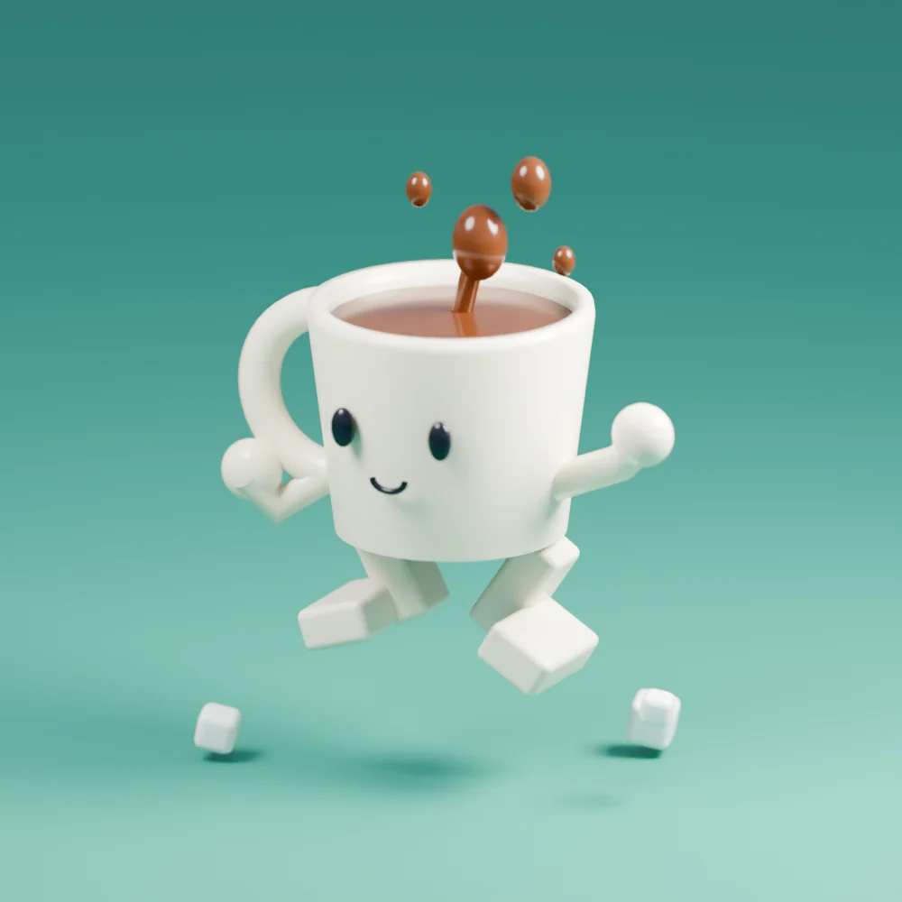

ひらめき、実験中。 VOL. 001
小さな遊びを、
AIと試す。
「もしも？」から、はじまる。
いつもの日常を、もう少しだけおもしろく。
うまくいくか、よりも。
おもしろそう、を試そう。
日常に、
ちょっと
いたずら。
ちょっと
いたずら。
SCROLL TO EXPLORE ↓ちいさな好奇心、大歓迎。35°41′ N / IMAGINATION
01 / ABOUTここは、
ここは、
「もしも？」の
実験室。
思いついたら、
ちょっと、やってみよう。
見慣れたモノに、目をつけてみる。
いつものルールを、ひっくり返してみる。
そんな日常のひらめきを、AIと一緒にカタチにする。
正解を探す場所ではなく、
まだない「おもしろい」に出会う場所。
あなたはここで、何を試してみる？
01 ひらめく→02 つくる→03 あそぶ
02 / PLAY & EXPERIMENT
PLAY / WORKS
気になる「もしも？」を選んで、
小さな実験に、飛び込もう。 ↙
EXPERIMENT #01
SMALL IDEAS, BIG WONDER.
ものに、いのちを。
ダンボールが人間になったら？
LITTLE EXPERIMENT · 3D MINIATURE 遊んでみる ↗
EXPERIMENT #02
SAME WORLD, NEW RULES.
あたりまえを、逆さまに。
雨が傘から逃げたら？
LITTLE EXPERIMENT · 3D MINIATURE 遊んでみる ↗
 EXPERIMENT #03
EXPERIMENT #03WHAT IF? PLAY IT.
ルールに、いたずら。
信号が嘘をついたら？
LITTLE EXPERIMENT · 3D MINIATURE 遊んでみる ↗

EXPERIMENT #04TURN DAILY LIFE INTO PLAY.
日常から、はみだそう。
コーヒーが逃げ出したら？
LITTLE EXPERIMENT · 3D MINIATURE 遊んでみる ↗
次の「もしも？」は、日常のどこかに。
MORE PLAY IS ON THE WAY.